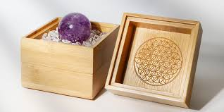
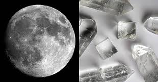
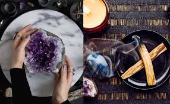

1. 晶簇與碎石法 (最安全)
利用高頻穩定的白水晶簇或碎石，持續清理小水晶的負向磁場。
- 操作： 將飾品放置於晶簇上或碎石碗中。
- 時長： 靜置 4-8 小時，建議隔夜。
- 優點： 適合所有水晶，完全無損害。

2. 月光能量法 (最溫和)
藉由月亮的陰柔能量為水晶充電，特別適合提升直覺力的水晶。
- 操作： 滿月前後放置於窗邊接受月光照射。
- 時長： 至少 2 小時以上。
- 優點： 適合粉晶、拉長石、月光石等。

3. 神聖煙燻法 (最迅速)
燃燒白色鼠尾草或秘魯聖木，利用煙霧帶走附著的沈重能量。
- 操作： 讓煙霧環繞水晶每一個切面約 1 分鐘。
- 時長： 煙霧完全包覆後即可。
- 注意： 需在通風良好的環境下進行。
4. 音頻震動法 (最高效)
利用頌缽或音叉的穩定震動頻率，瞬間校準水晶的能量分子。
- 操作： 將水晶放於頌缽旁，敲擊發出共振音。
- 時長： 持續 3-5 次完整的餘音。
- 優點： 特別適合不宜碰水、體積巨大的原礦。
⚠️ 淨化地雷：請務必避免
❌ 嚴禁鹽水泡法： 鹽分會滲入微小裂縫，長期會導致水晶霧化或結構崩裂（如方解石、螢石）。
❌ 避免烈日曝曬： 紫水晶、粉晶、黃水晶等有色水晶，在陽光下曝曬過久會導致永久性褪色。